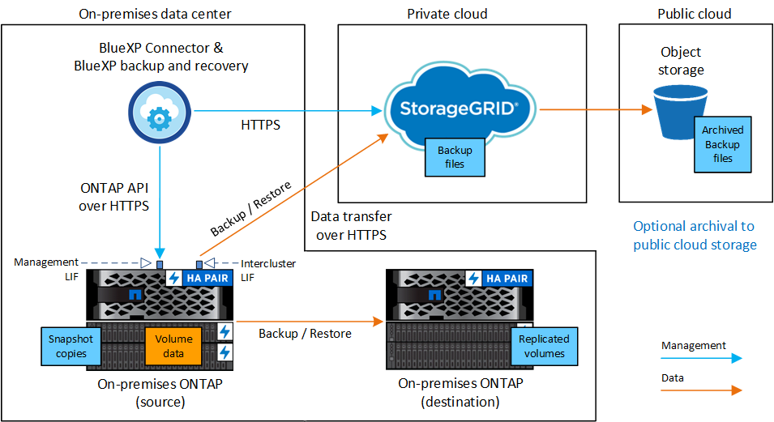
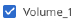

リリースノート
リリースノート
オンプレミスの ONTAP データを StorageGRID にバックアップ
 変更を提案
変更を提案
オンプレミスのプライマリONTAPシステムからセカンダリストレージシステムおよびNetApp StorageGRIDシステムのオブジェクトストレージへのボリュームデータのバックアップを開始するには、いくつかの手順を実行します。

|
「オンプレミスのONTAPシステム」には、FAS、AFF、ONTAP Selectシステムが含まれます。 |
クイックスタート
これらの手順を実行すると、すぐに作業を開始できます。各手順の詳細については、このトピックの以降のセクションを参照してください。
 使用する接続方法を特定します
使用する接続方法を特定しますオンプレミスのONTAPクラスタをパブリックインターネット経由でStorageGRIDに直接接続する方法、またはVPNを使用してプライベートVPCエンドポイントインターフェイスを介してトラフィックをStorageGRIDにルーティングするかどうかを確認します。
 BlueXPコネクタを準備します
BlueXPコネクタを準備しますオンプレミスに既にコネクタがデプロイされている場合は、すべて準備が完了しています。そうでない場合は、ONTAPデータをStorageGRIDにバックアップするためのBlueXPコネクタを作成する必要があります。また、コネクタがStorageGRIDに接続できるように、コネクタのネットワーク設定をカスタマイズする必要があります。
 ライセンス要件を確認
ライセンス要件を確認StorageGRIDとBlueXPの両方のライセンス要件を確認する必要があります。
を参照してください ライセンス要件を確認。
 ONTAPクラスタを準備
ONTAPクラスタを準備BlueXPでONTAPクラスタを検出し、クラスタが最小要件を満たしていることを確認し、ネットワーク設定をカスタマイズしてクラスタをStorageGRIDに接続できるようにします。
 バックアップターゲットとしてStorageGRIDを準備します
バックアップターゲットとしてStorageGRIDを準備しますStorageGRIDバケットを作成および管理するためのコネクタの権限を設定します。また、オンプレミスのONTAPクラスタでバケットに対するデータの読み取りと書き込みができるように権限を設定する必要があります。
必要に応じて、デフォルトのStorageGRID暗号化キーを使用する代わりに、データ暗号化用に独自のカスタム管理キーを設定できます。 StorageGRID環境でONTAPバックアップを受信できるようにする方法をご紹介します。
 ONTAPボリュームでバックアップをアクティブ化します
ONTAPボリュームでバックアップをアクティブ化します作業環境を選択し、右パネルのバックアップ/リカバリサービスの横にある*有効化>バックアップボリューム*をクリックします。次に、セットアップウィザードに従って、使用するレプリケーションポリシーとバックアップポリシー、およびバックアップするボリュームを選択します。
接続方法を特定します
次の図は、オンプレミスのONTAPシステムをStorageGRIDにバックアップする各コンポーネントと、それらのコンポーネント間の接続を示しています。
必要に応じて、オンプレミスの同じ場所にあるセカンダリONTAPシステムに接続してボリュームをレプリケートできます。

コネクタとオンプレミスのONTAPシステムを、インターネットにアクセスできないオンプレミスの場所（「ダークサイト」）にインストールする場合は、StorageGRIDシステムを同じオンプレミスのデータセンターに配置する必要があります。ダークサイトの構成では、古いバックアップファイルをパブリッククラウドにアーカイブすることはできません。
BlueXPコネクタを準備します
BlueXPコネクタは'BlueXP機能の主要なソフトウェアですONTAP データのバックアップとリストアにはコネクタが必要です。
コネクタを作成または切り替えます
データをStorageGRIDにバックアップする場合は、オンプレミスでBlueXP Connectorが使用可能である必要があります。新しいコネクタをインストールするか、現在選択されているコネクタがオンプレミスにあることを確認する必要があります。コネクタは、インターネットに接続するかどうかに関係なく、サイトにインストールできます。
コネクタのネットワーク要件を準備
コネクタが取り付けられているネットワークで次の接続が有効になっていることを確認します。
-
ポート443からStorageGRID ゲートウェイノードへのHTTPS接続
-
ONTAP クラスタ管理 LIF へのポート 443 経由の HTTPS 接続
-
BlueXPのバックアップとリカバリへのポート443経由のアウトバウンドインターネット接続（「ダーク」サイトにコネクタがインストールされている場合は不要）
プライベートモード（ダークサイト）に関する考慮事項
-
BlueXPコネクタには、BlueXPのバックアップとリカバリ機能が組み込まれています。プライベートモードでインストールされている場合は、コネクタソフトウェアを定期的に更新して、新しい機能にアクセスする必要があります。を確認します "BlueXPのバックアップとリカバリの最新情報" にアクセスし、BlueXPのバックアップとリカバリの各リリースの新機能を確認してください。新しい機能を使用する場合は、手順~に従ってください "Connector ソフトウェアをアップグレードします"。
新しいバージョンのBlueXPバックアップ/リカバリでは、オブジェクトストレージへのバックアップの作成に加えて、Snapshotコピーやレプリケートされたボリュームのスケジュール設定と作成を行うことができます。これには、バージョン3.9.31以降のBlueXP Connectorが必要です。したがって、すべてのバックアップを管理するために、この最新リリースを入手することをお勧めします。
-
SaaS環境でBlueXPのバックアップとリカバリを使用すると、BlueXPのバックアップとリカバリの設定データがクラウドにバックアップされます。インターネットにアクセスできないサイトでBlueXPのバックアップとリカバリを使用すると、BlueXPのバックアップとリカバリの設定データがバックアップが格納されているStorageGRIDバケットにバックアップされます。プライベートモードサイトでコネクタに障害が発生した場合は、できます "BlueXPのバックアップとリカバリのデータを新しいコネクタにリストアします"。
ライセンス要件を確認
クラスタでBlueXPのバックアップとリカバリをアクティブ化するには、ネットアップからBlueXPのバックアップとリカバリのBYOLライセンスを購入してアクティブ化する必要があります。このライセンスはアカウント用であり、複数のシステムで使用できます。
ネットアップから提供されるシリアル番号を使用して、ライセンスの期間と容量にサービスを利用できるようにする必要があります。 "BYOL ライセンスの管理方法について説明します"。

|
PAYGO ライセンスは、ファイルを StorageGRID にバックアップする場合にはサポートされません。 |
ONTAPクラスタを準備
ソースのオンプレミスONTAPシステムと、セカンダリのオンプレミスONTAPまたはCloud Volumes ONTAPシステムを準備する必要があります。
ONTAPクラスタの準備では、次の手順を実行します。
-
BlueXPでONTAPシステムを検出しましょう
-
ONTAPのシステム要件を確認
-
オブジェクトストレージにデータをバックアップするためのONTAPネットワークの要件を確認します
-
ボリュームをレプリケートするためのONTAPネットワークの要件を確認します
BlueXPでONTAPシステムを検出しましょう
ソースのオンプレミスONTAPシステムとセカンダリのオンプレミスONTAPシステムまたはCloud Volumes ONTAPシステムの両方が、BlueXPキャンバスで利用可能である必要があります。
クラスタを追加するには、クラスタ管理 IP アドレスと admin ユーザアカウントのパスワードが必要です。
"クラスタの検出方法について説明します"。
ONTAPのシステム要件を確認
次のONTAP要件が満たされていることを確認します。
-
ONTAP 9.8以上、ONTAP 9.8P13以降が推奨されます。
-
SnapMirror ライセンス（ Premium Bundle または Data Protection Bundle に含まれます）。
注： BlueXPのバックアップとリカバリを使用する場合、「Hybrid Cloud Bundle」は必要ありません。
方法をご確認ください "クラスタライセンスを管理します"。
-
時間とタイムゾーンが正しく設定されている。方法をご確認ください "クラスタ時間を設定します"。
-
データをレプリケートする場合は、データをレプリケートする前に、ソースシステムとデスティネーションシステムで互換性のあるONTAPバージョンが実行されていることを確認する必要があります。
オブジェクトストレージにデータをバックアップするためのONTAPネットワークの要件を確認します
オブジェクトストレージに接続するシステムで、次の要件を設定する必要があります。
-
ファンアウトバックアップアーキテクチャを使用する場合は、_primary_storageシステムで次の設定を行う必要があります。
-
カスケードバックアップアーキテクチャを使用する場合は、_secondary_storageシステムで次の設定を行う必要があります。
次のONTAPクラスタネットワーク要件が必要です。
-
ONTAP クラスタは、バックアップおよびリストア処理のために、ユーザ指定のポートをクラスタ間LIFからStorageGRID ゲートウェイノードに介してHTTPS接続を開始します。ポートはバックアップのセットアップ時に設定できます。
ONTAP は、オブジェクトストレージとの間でデータの読み取りと書き込みを行います。オブジェクトストレージが開始されることはなく、応答するだけです。
-
ONTAP では、コネクタからクラスタ管理 LIF へのインバウンド接続が必要です。コネクタは必ずオンプレミスに配置してください。
-
クラスタ間 LIF は、バックアップ対象のボリュームをホストする各 ONTAP ノードに必要です。LIF は、 ONTAP がオブジェクトストレージへの接続に使用する IPspace に関連付けられている必要があります。 "IPspace の詳細については、こちらをご覧ください"。
BlueXPのバックアップとリカバリをセットアップするときに、使用するIPspaceを指定するように求められます。各 LIF を関連付ける IPspace を選択する必要があります。これは、「デフォルト」の IPspace または作成したカスタム IPspace です。
-
ノードのクラスタ間 LIF はオブジェクトストアにアクセスできます（コネクタが「ダーク」サイトに設置されている場合は不要）。
-
ボリュームが配置されている Storage VM に DNS サーバが設定されている。方法を参照してください "SVM 用に DNS サービスを設定"。
-
を使用しているIPspaceがデフォルトと異なる場合は、オブジェクトストレージにアクセスするための静的ルートの作成が必要になることがあります。
-
必要に応じてファイアウォールルールを更新して、指定したポート（通常はポート443）を介してONTAP からオブジェクトストレージへのBlueXPバックアップ/リカバリサービスの接続と、Storage VMからDNSサーバへのポート53（TCP / UDP）経由の名前解決トラフィックを許可します。
ボリュームをレプリケートするためのONTAPネットワークの要件を確認します
BlueXPのバックアップとリカバリを使用してセカンダリONTAPシステムにレプリケートされたボリュームを作成する場合は、ソースシステムとデスティネーションシステムが次のネットワーク要件を満たしていることを確認してください。
オンプレミスのONTAPネットワークの要件
-
クラスタが社内にある場合は、社内ネットワークからクラウドプロバイダ内の仮想ネットワークへの接続が必要です。これは通常、 VPN 接続です。
-
ONTAP クラスタは、サブネット、ポート、ファイアウォール、およびクラスタの追加要件を満たしている必要があります。
Cloud Volumes ONTAPまたはオンプレミスのシステムにレプリケートできるため、オンプレミスのONTAPシステムのピアリング要件を確認してください。 "クラスタピアリングの前提条件については、 ONTAP のドキュメントを参照してください"。
Cloud Volumes ONTAPネットワークの要件
-
インスタンスのセキュリティグループに、必要なインバウンドおよびアウトバウンドのルールが含まれている必要があります。具体的には、 ICMP とポート 11104 および 11105 のルールが必要です。これらのルールは、事前定義されたセキュリティグループに含まれています。
バックアップターゲットとしてStorageGRIDを準備します
StorageGRID は、次の要件を満たす必要があります。を参照してください "StorageGRID のドキュメント" を参照してください。
- サポートされている StorageGRID のバージョン
-
StorageGRID 10.3 以降がサポートされます。
DataLockとRansomware Protectionをバックアップに使用するには、StorageGRID システムでバージョン11.6.0.3以降が実行されている必要があります。
古いバックアップをクラウドアーカイブストレージに階層化するには、StorageGRID システムでバージョン11.3以降が実行されている必要があります。また、StorageGRID システムがBlueXPキャンバスで検出されている必要があります。
- S3 クレデンシャル
-
StorageGRID ストレージへのアクセスを制御するS3テナントアカウントを作成しておく必要があります。 "詳細については、StorageGRID のドキュメントを参照してください"。
StorageGRID へのバックアップを設定する際、テナントアカウントのS3アクセスキーとシークレットキーを入力するようにバックアップウィザードで求められます。テナントアカウントを使用すると、バックアップの格納に使用するStorageGRID バケットをBlueXPのバックアップとリカバリで認証してアクセスできるようになります。StorageGRID が誰が要求を行うかを認識できるようにするには、キーが必要です。
これらのアクセスキーは、次の権限を持つユーザに関連付ける必要があります。
"s3:ListAllMyBuckets", "s3:ListBucket", "s3:GetObject", "s3:PutObject", "s3:DeleteObject", "s3:CreateBucket" - オブジェクトのバージョン管理
-
オブジェクトストアバケットでは、StorageGRID オブジェクトのバージョン管理を手動で有効にしないでください。
古いバックアップファイルをパブリッククラウドストレージにアーカイブする準備をします
古いバックアップファイルをアーカイブストレージに階層化すると、不要なバックアップに低コストのストレージクラスを使用することで、コストを削減できます。StorageGRID は、アーカイブストレージを提供しないオンプレミス（プライベートクラウド）の解決策 ですが、古いバックアップファイルをパブリッククラウドのアーカイブストレージに移動できます。この方法で使用した場合、クラウドストレージに階層化されたデータ、またはクラウドストレージから復元されたデータは、StorageGRID とクラウドストレージの間を移動します。BlueXPはこのデータ転送には関与しません。
現在のサポートでは、AWS_S3 Glacier Deep Archive_or_Azure Archive_storageにバックアップをアーカイブできます。
-
ONTAP 要件*
-
クラスタでONTAP 9.12.1以降が使用されている必要があります。
-
StorageGRID 要件*
-
StorageGRIDで11.4以降を使用している必要があります。
-
StorageGRID はである必要があります "BlueXP Canvasで検出され、使用可能になりました"。
-
Amazon S3の要件*
-
アーカイブ済みバックアップを格納するストレージスペースには、Amazon S3アカウントを登録する必要があります。
-
AWS S3 GlacierまたはS3 Glacier Deep Archiveストレージにバックアップを階層化することもできます。 "AWSアーカイブ階層の詳細は、こちらをご覧ください"。
-
StorageGRID には、バケットへのフルコントロールアクセスが必要です (
s3:*）。ただし、これができない場合は、バケットポリシーで次のS3権限をStorageGRID に付与する必要があります。-
s3:AbortMultipartUpload -
s3:DeleteObject -
s3:GetObject -
s3:ListBucket -
s3:ListBucketMultipartUploads -
s3:ListMultipartUploadParts -
s3:PutObject -
s3:RestoreObject
-
-
Azure Blob要件*
-
アーカイブ済みバックアップを格納するストレージスペースに対するAzureサブスクリプションに登録する必要があります。
-
アクティブ化ウィザードでは、既存のリソースグループを使用して、バックアップを保存するBLOBコンテナを管理するか、新しいリソースグループを作成することができます。
クラスタのバックアップポリシーのアーカイブ設定を定義するときは、クラウドプロバイダのクレデンシャルを入力し、使用するストレージクラスを選択します。クラスタのバックアップをアクティブ化すると、BlueXPのバックアップとリカバリによってクラウドバケットが作成されます。AWSおよびAzureアーカイブストレージに必要な情報を次に示します。

選択したアーカイブポリシーの設定では、StorageGRID で情報ライフサイクル管理（ILM）ポリシーが生成され、「ルール」として追加されます。
-
既存のアクティブなILMポリシーがある場合は、新しいルールがILMポリシーに追加されてデータがアーカイブ階層に移動されます。
-
「ドラフト」状態の既存のILMポリシーがある場合は、新しいILMポリシーを作成およびアクティブ化できません。 "StorageGRID のILMポリシーとルールに関する詳細情報"。
ONTAPボリュームでバックアップをアクティブ化します
オンプレミスの作業環境からいつでも直接バックアップをアクティブ化できます。
ウィザードでは、次の主な手順を実行します。
また可能です APIコマンドを表示します レビューステップでは、コードをコピーして、将来の作業環境のバックアップアクティベーションを自動化できます。
ウィザードを開始します
-
次のいずれかの方法でバックアップとリカバリのアクティブ化ウィザードにアクセスします。
-
BlueXPキャンバスで、作業環境を選択し、右パネルのバックアップとリカバリサービスの横にある*[有効化]>[ボリュームのバックアップ]*を選択します。
バックアップのデスティネーションがキャンバスの作業環境として存在する場合は、ONTAPクラスタをオブジェクトストレージにドラッグできます。
-
[バックアップとリカバリ]バーで*を選択します。[ボリューム]タブで、[アクション（…）]オプションを選択し、（オブジェクトストレージへのレプリケーションまたはバックアップがまだ有効になっていない）単一ボリュームに対して[バックアップのアクティブ化]*を選択します。
ウィザードの[Introduction]ページには、ローカルSnapshot、レプリケーション、バックアップなどの保護オプションが表示されます。この手順で2番目のオプションを選択した場合は、1つのボリュームが選択された状態で[Define Backup Strategy]ページが表示されます。
-
-
次のオプションに進みます。
-
BlueXPコネクタをすでにお持ちの場合は、これで準備は完了です。[次へ]*を選択します。
-
BlueXPコネクタをまだお持ちでない場合は、*[Add a Connector]*オプションが表示されます。を参照してください BlueXPコネクタを準備します。
-
バックアップするボリュームを選択します
保護するボリュームを選択します。保護されたボリュームとは、Snapshotポリシー、レプリケーションポリシー、オブジェクトへのバックアップポリシーのうち1つ以上を含むボリュームです。
FlexVolボリュームとFlexGroupボリュームのどちらを保護するかを選択できますが、作業環境でバックアップをアクティブ化するときは、これらのボリュームを組み合わせて選択することはできません。方法を参照してください "作業環境内の追加ボリュームのバックアップをアクティブ化" （FlexVolまたはFlexGroup）初期ボリュームのバックアップの設定が完了したら、
|
|
|
選択したボリュームにSnapshotポリシーまたはレプリケーションポリシーがすでに適用されている場合は、あとで選択したポリシーで既存のポリシーが上書きされます。
-
[Select Volumes]ページで、保護するボリュームを選択します。
-
必要に応じて、行をフィルタして、特定のボリュームタイプや形式などのボリュームのみを表示し、選択を容易にします。
-
最初のボリュームを選択したら、すべてのFlexVolボリュームを選択できます（FlexGroupボリュームは一度に1つだけ選択できます）。既存のFlexVolボリュームをすべてバックアップするには、最初に1つのボリュームをオンにしてから、タイトル行のボックスをオンにします。（
 ）。
）。 -
個々のボリュームをバックアップするには、各ボリュームのボックス（

）。
-
-
「 * 次へ * 」を選択します。
バックアップ戦略を定義します
バックアップ戦略を定義するには、次のオプションを設定します。
-
1つまたはすべてのバックアップオプション（ローカルSnapshot、レプリケーション、オブジェクトストレージへのバックアップ）が必要かどうか
-
アーキテクチャ
-
ローカルSnapshotポリシー
-
レプリケーションのターゲットとポリシー
選択したボリュームのSnapshotポリシーとレプリケーションポリシーがこの手順で選択したポリシーと異なる場合は、既存のポリシーが上書きされます。 -
オブジェクトストレージ情報（プロバイダ、暗号化、ネットワーク、バックアップポリシー、エクスポートオプション）へのバックアップ。
-
[Define backup strategy]ページで、次のいずれかまたはすべてを選択します。デフォルトでは、3つすべてが選択されています。
-
*ローカルSnapshot *：レプリケーションまたはオブジェクトストレージへのバックアップを実行する場合は、ローカルSnapshotを作成する必要があります。
-
レプリケーション：別のONTAPストレージシステムにレプリケートされたボリュームを作成します。
-
バックアップ：ボリュームをオブジェクトストレージにバックアップします。
-
-
アーキテクチャ:レプリケーションとバックアップの両方を選択した場合は'次のいずれかの情報フローを選択します
-
カスケード：情報はプライマリからセカンダリに流れ、次にセカンダリからオブジェクトストレージに流れます。
-
ファンアウト：プライマリからセカンダリへ、プライマリからオブジェクトストレージへ、情報が流れます。
これらのアーキテクチャの詳細については、を参照してください "保護対策を計画しましょう"。
-
-
*ローカルSnapshot *：既存のSnapshotポリシーを選択するか、新しいSnapshotポリシーを作成します。
Snapshotをアクティブ化する前にカスタムポリシーを作成するには、を参照してください。 "ポリシーを作成する"。 ポリシーを作成するには、*[新しいポリシーの作成]*を選択し、次の手順を実行します。
-
ポリシーの名前を入力します。
-
最大5つのスケジュール（通常は異なる周波数）を選択します。
-
「 * Create * 」を選択します。
-
-
レプリケーション：次のオプションを設定します。
-
レプリケーションターゲット：デスティネーションの作業環境とSVMを選択します。必要に応じて、レプリケートするボリュームの名前に追加するデスティネーションアグリゲートとプレフィックスまたはサフィックスを選択します。
-
レプリケーションポリシー：既存のレプリケーションポリシーを選択するか作成します。
レプリケーションをアクティブ化する前にカスタムポリシーを作成するには、を参照してください。 "ポリシーを作成する"。 ポリシーを作成するには、*[新しいポリシーの作成]*を選択し、次の手順を実行します。
-
ポリシーの名前を入力します。
-
最大5つのスケジュール（通常は異なる周波数）を選択します。
-
「 * Create * 」を選択します。
-
-
-
オブジェクトにバックアップ：*バックアップ*を選択した場合は、次のオプションを設定します。
-
プロバイダー：* StorageGRID *を選択します。
-
プロバイダ設定：プロバイダゲートウェイノードのFQDNの詳細、ポート、アクセスキー、シークレットキーを入力します。
アクセスキーとシークレットキーは、ONTAPクラスタにバケットへのアクセスを許可するために作成したIAMユーザのものです。
-
ネットワーク：バックアップするボリュームが配置されているONTAPクラスタのIPspaceを選択します。この IPspace のクラスタ間 LIF には、アウトバウンドのインターネットアクセスが必要です（コネクタが「ダーク」サイトにインストールされている場合は不要です）。
正しいIPspaceを選択すると、BlueXPのバックアップとリカバリでONTAP からStorageGRID オブジェクトストレージへの接続をセットアップできます。 -
バックアップポリシー：既存のオブジェクトストレージへのバックアップポリシーを選択するか作成します。
バックアップをアクティブ化する前にカスタムポリシーを作成するには、を参照してください。 "ポリシーを作成する"。 ポリシーを作成するには、*[新しいポリシーの作成]*を選択し、次の手順を実行します。
-
ポリシーの名前を入力します。
-
最大5つのスケジュール（通常は異なる周波数）を選択します。
-
「 * Create * 」を選択します。
クラスタがONTAP 9.11.1以降を使用している場合は、_DataLockとランサムウェアによる攻撃からバックアップを保護するように設定できます。_DataLock_はバックアップファイルの変更や削除を防止します。_Ransomware protection_scanはバックアップファイルをスキャンして、バックアップファイルにランサムウェア攻撃の痕跡がないかどうかを確認します。 "使用可能なDataLock設定の詳細については、こちらを参照してください"。
-
クラスタがONTAP 9.12.1以降を使用しており、StorageGRID システムがバージョン11.4以降を使用している場合は、特定の日数が経過したあとに古いバックアップをパブリッククラウドのアーカイブ階層に階層化することを選択できます。現在、AWS S3 Glacier Deep ArchiveまたはAzure Archiveストレージ階層がサポートされています。 この機能を使用するためのシステムの設定方法を参照してください。
-
バックアップをパブリッククラウドに階層化：バックアップを階層化するクラウドプロバイダを選択し、プロバイダの詳細を入力します。
新しいStorageGRIDクラスタを選択または作成します。StorageGRIDクラスタを作成してBlueXPで検出できるようにする方法については、を参照してください "StorageGRID のドキュメント"。
-
既存のSnapshotコピーをバックアップコピーとしてオブジェクトストレージにエクスポート：この作業環境に、この作業環境に対して選択したバックアップスケジュールラベル（daily、weeklyなど）と一致するボリュームのローカルSnapshotコピーがある場合は、この追加のプロンプトが表示されます。ボリュームを最大限に保護するために、履歴Snapshotをすべてオブジェクトストレージにバックアップファイルとしてコピーする場合は、このチェックボックスをオンにします。
-
-
「 * 次へ * 」を選択します。
選択内容を確認します
これにより、選択内容を確認し、必要に応じて調整を行うことができます。
-
[Review]ページで、選択内容を確認します。
-
必要に応じて、Snapshotポリシーのラベルをレプリケーションポリシーおよびバックアップポリシーのラベルと自動的に同期する*チェックボックスをオンにします。これにより、レプリケーションポリシーとバックアップポリシーのラベルに一致するラベルを持つSnapshotが作成されます。
-
[バックアップのアクティブ化]*を選択します。
BlueXPのバックアップとリカバリで、ボリュームの初期バックアップが作成されます。レプリケートされたボリュームとバックアップファイルのベースライン転送には、ソースデータのフルコピーが含まれます。以降の転送には、Snapshotコピーに含まれるプライマリストレージデータの差分コピーが含まれます。
レプリケートされたボリュームが、プライマリストレージボリュームと同期されるデスティネーションクラスタに作成されます。
入力したS3アクセスキーとシークレットキーで指定されたサービスアカウントにS3バケットが作成され、バックアップファイルがそこに格納されます。
ボリュームバックアップダッシュボードが表示され、バックアップの状態を監視できます。
を使用して、バックアップジョブとリストアジョブのステータスを監視することもできます "［ジョブ監視］パネル"。
APIコマンドを表示します
バックアップとリカバリのアクティブ化ウィザードで使用するAPIコマンドを表示し、必要に応じてコピーすることができます。これは、将来の作業環境でバックアップを自動的にアクティブ化する場合に必要になることがあります。
-
バックアップとリカバリのアクティブ化ウィザードで、*[API要求の表示]*を選択します。
-
コマンドをクリップボードにコピーするには、*コピー*アイコンを選択します。
次の手順
-
可能です "バックアップファイルとバックアップポリシーを管理"。バックアップの開始と停止、バックアップの削除、バックアップスケジュールの追加と変更などが含まれます。
-
可能です "クラスタレベルのバックアップの設定を管理します"。これには、バックアップをオブジェクトストレージにアップロードするためのネットワーク帯域幅の変更、将来のボリュームに対する自動バックアップ設定の変更などが含まれます。
-
また可能です "ボリューム、フォルダ、または個々のファイルをバックアップファイルからリストアする" オンプレミスのONTAP システムへの移行をサポート